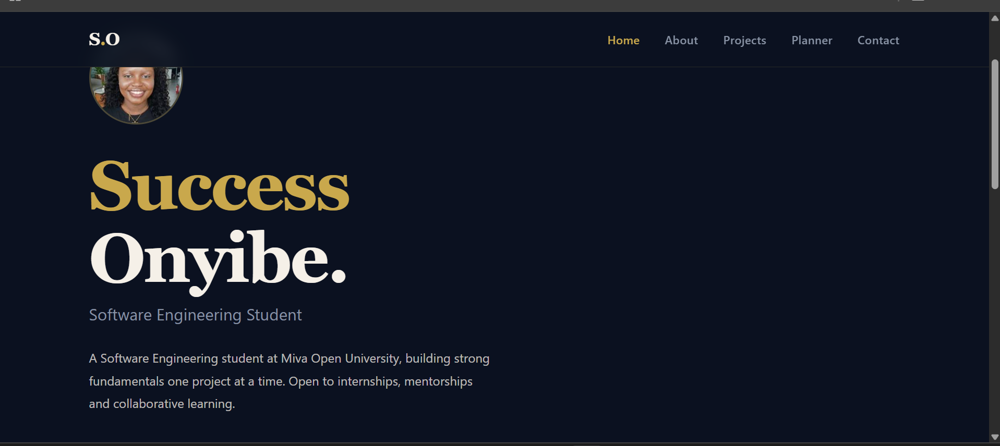
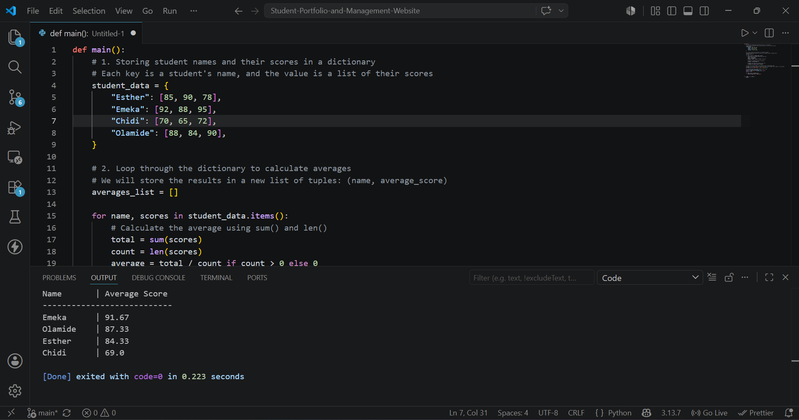
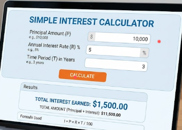
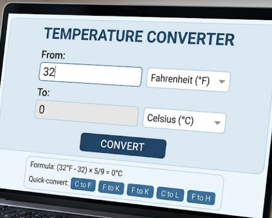

Projects
Things I've Built
Assignments, experiments, and exercises.

Python / Data Structures
Student Grade Tracker
A Python program that stores student names and scores in a dictionary, calculates averages, and sorts results. Practised lists, loops, and dictionaries.

Python
Simple Interest Calculator
A Python function that takes principal, rate, and time as inputs and returns the simple interest. Includes input validation, tested with multiple scenarios in a Jupyter notebook.

Python
Temperature Converter
A Celsius-to-Fahrenheit converter written as a reusable Python function. Extended to also convert to Kelvin and handle invalid inputs.
Media
Learning in Progress
A walkthrough of how the temperature converter works, and a voice note about what I learned building this site.
Project
Reflection Note
it has been a great learning experience building this portfolio. I learned how to create a multi-page website using only HTML, CSS, and JavaScript, which was challenging but rewarding. I also practiced responsive design techniques to make sure the site looks good on different screen sizes. Overall, this project helped me solidify my understanding of web development fundamentals and gave me a platform to showcase my work.